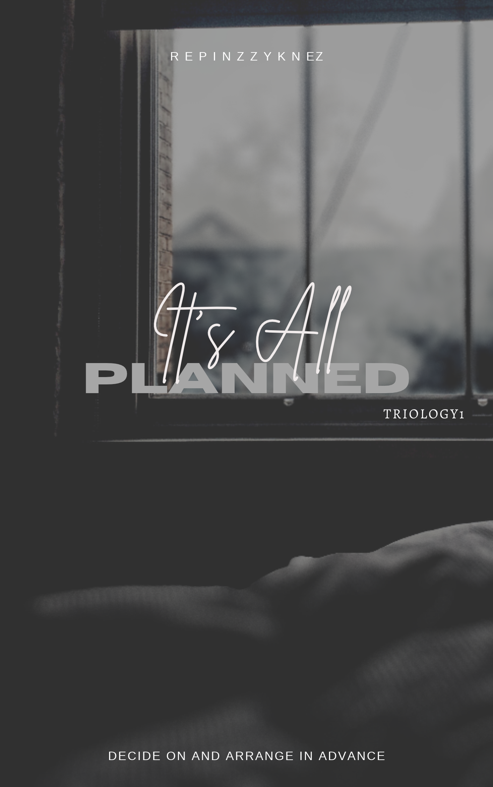
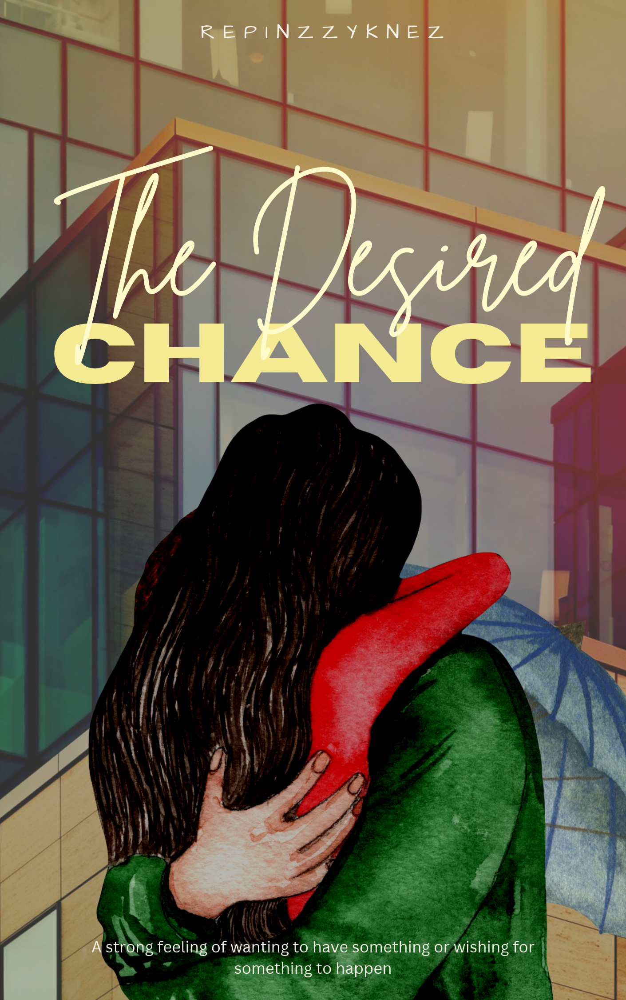
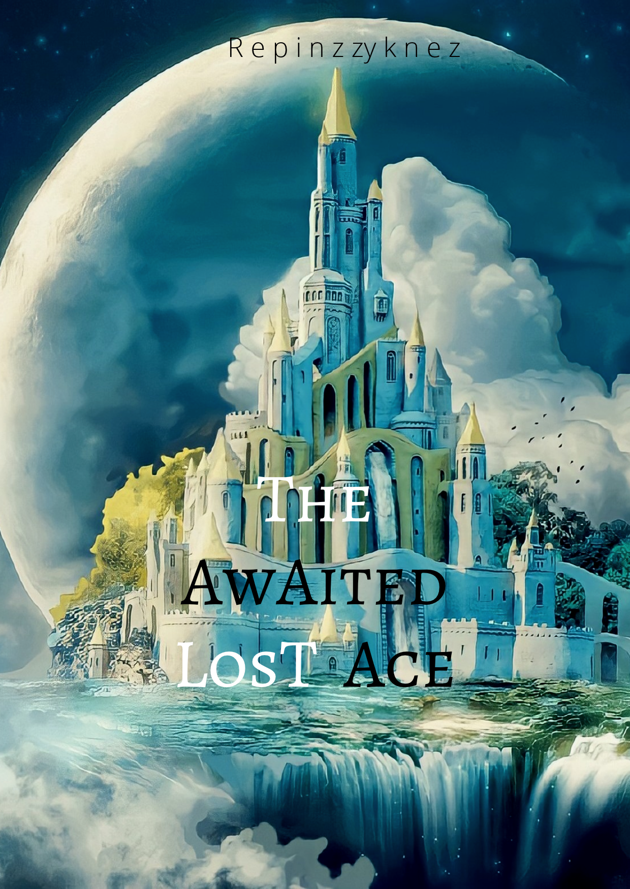

My Writing Portfolio
My journey as an author leading to my current ongoing story
Current Story in Progress

The Dominion of Mysts and Quest
In a realm filled with mysterious and magical ethereal creatures, a pink dragon lies in the Domain of Mysts. This enchanting land is veiled in enchantment, where the air is alive with ancient spells and whispers of forgotten legends.
Within the Dominion of Mysts, an epic journey awaits those who possess the bravery to seek it. This journey not only promises thrilling adventures, but also the opportunity to uncover the secrets of the universe and attain unimaginable power. It is believed that only a select few, guided by the spirit of the four dragon that symbolizes the houses of Azurewing Academy can embark on this treacherous quest and emerge triumphant.
The Journey Before/ The Unpublish and Not Finish Ones

It's All Planned
✨ "Decide on and arrange in advance" (Click to read Story Description)

The Desired Chance
✨ "A strong feeling of wanting someone you want to be with" (Click to read Story Description)
A heartfelt story exploring second chances, longing, and courage, The Desired Chance delves into the agonizing weight of regret and the desperate hope of undoing past mistakes. When a rare opportunity arises to rewrite history and salvage a love that was once thought lost forever, taking hold of that long-awaited second chance proves far more dangerous than expected. As hidden truths surface and fate demands its price, courage becomes the only way to navigate the unexpected consequences of altering what was meant to be, proving that grabbing a desired chance requires more than just longing—it requires the strength to face whatever comes next.

The Awaited Lost Ace
✨ "A journey of magic & secrets and the comeback of the chosen one" (Click to read Story Description)
An intrigue-filled fantasy tale centered around an ancient floating castle suspended in the clouds, The Awaited Lost Ace uncovers a world shrouded in mystery, dark conspiracies, and forgotten legends. As the floating kingdom teeters on the brink of collapse, hidden secrets unravel to reveal that its ultimate salvation lies in a power long presumed to be extinct. The realm's last hope rests on the discovery of a missing key, the long-awaited lost ace whose arrival will either break the ancient curse surrounding the kingdom or plunge its majestic towers into ultimate ruin.